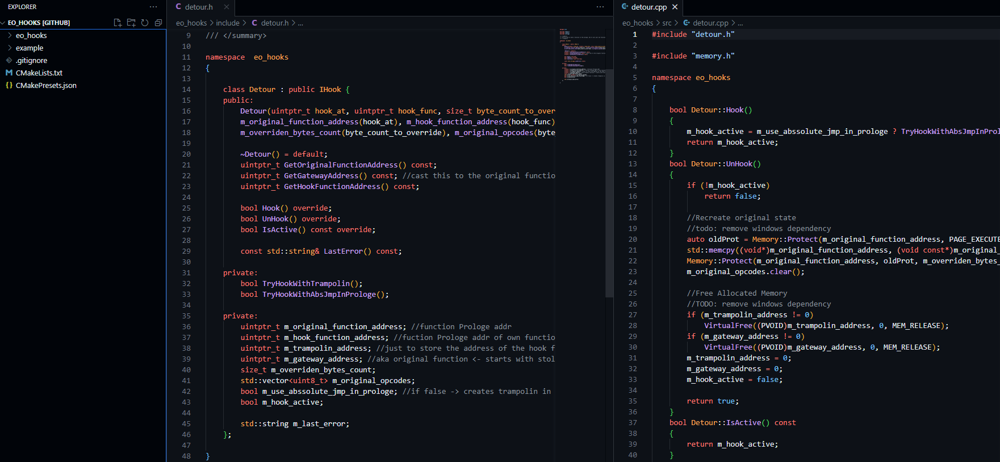

Hooking Framework

Dieses kleine "Framework" ermöglicht das injizieren von Assembler Caves in fremden Quellcode. In der main.cpp wird gezeigt, wie ein MidfunctionHook in dem Spiel No Man's Sky verwendet werden kann um die Anzahl der gesammelten Ressourcen zu erhöhen. Das Framework entstand, da die existierenden Bibliotheken/Frameworks für meine Zwecke einen zu hohen Overload hatten. Außerdem wollte ich mehr über die Aufrufkonventionen, Register, etc.. von x64 Architekturen lernen. Dem Nutzer ist es möglich zu entscheiden ob der Hook eine Relative (In 2GB memory range) oder Absolute Jmp Adresse für das Trampolin verwenden möchte (Relativ benötigt 5 Bytes, Absolut 14 Bytes). Da dieses Projekt keinen Assembler und Disassembler verwendet, muss der zu injizierende Assembler Code im Voraus kompiliert werden. Da kein Disassembler verwendet wird, darf sich im überschriebenen Quellcode keine Instruktion mit relativer Adresse befinden. Als nächstes soll das Projekt um einen Call Hook (auch Detour gennant) erweitert werden.
Detailiertere Infos über Hooks sind in meiner Bachelorarbeit zu finden
Eine sauber aufgesetzte Bibliothek ohne NoManSky Abhängigkeiten existiert bereits in einem privaten Repository.
